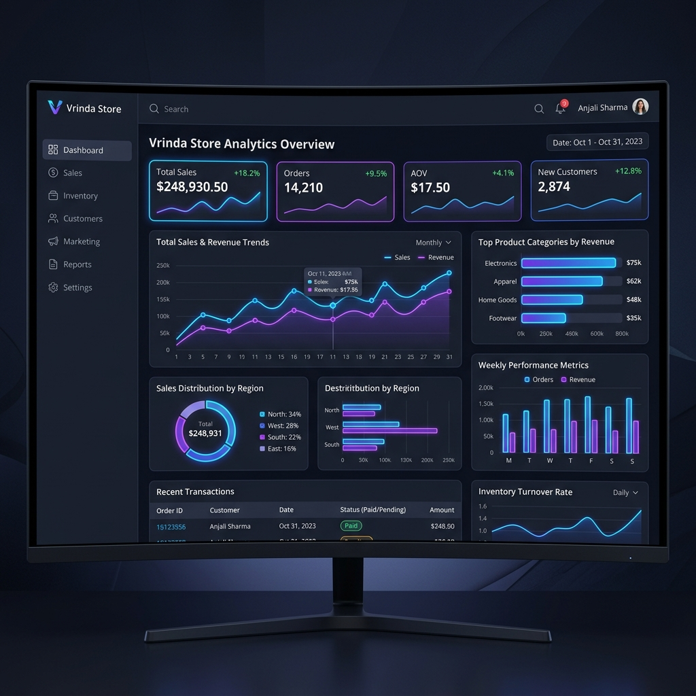
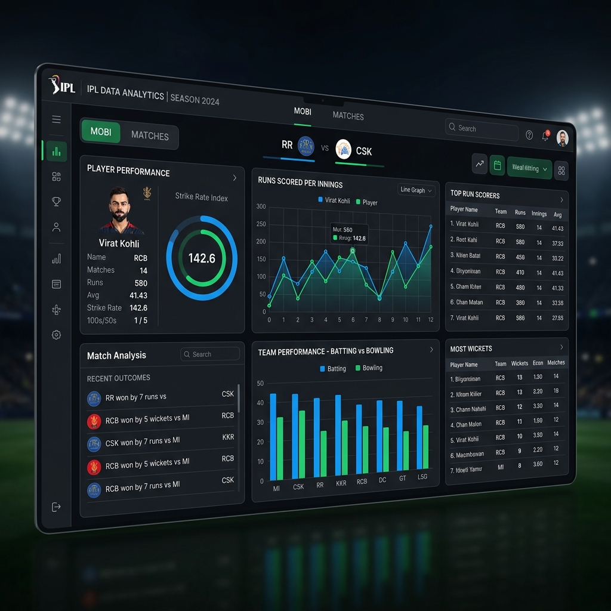
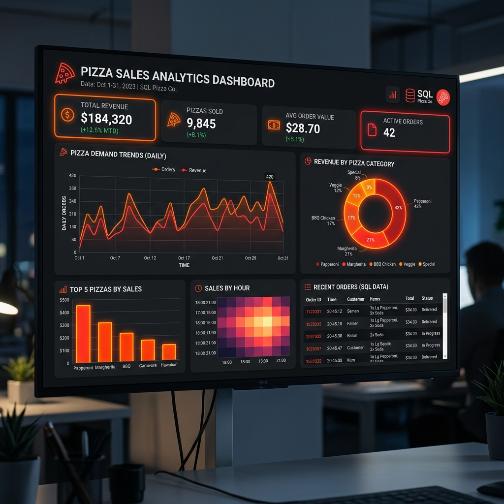
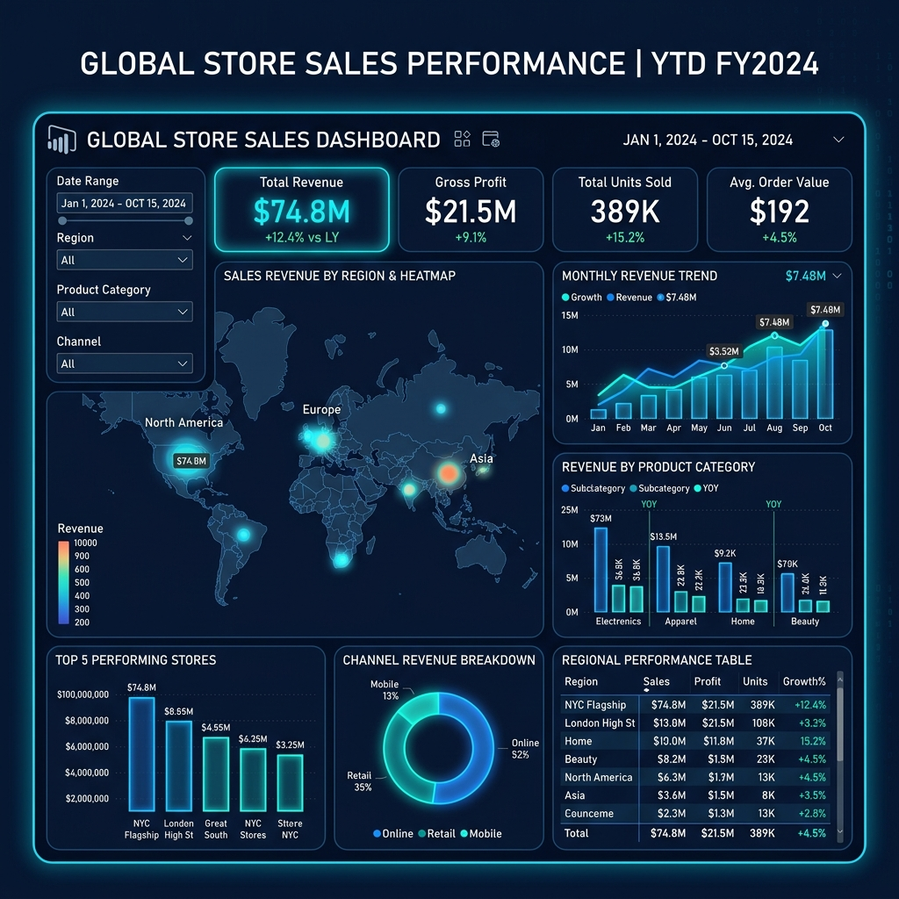
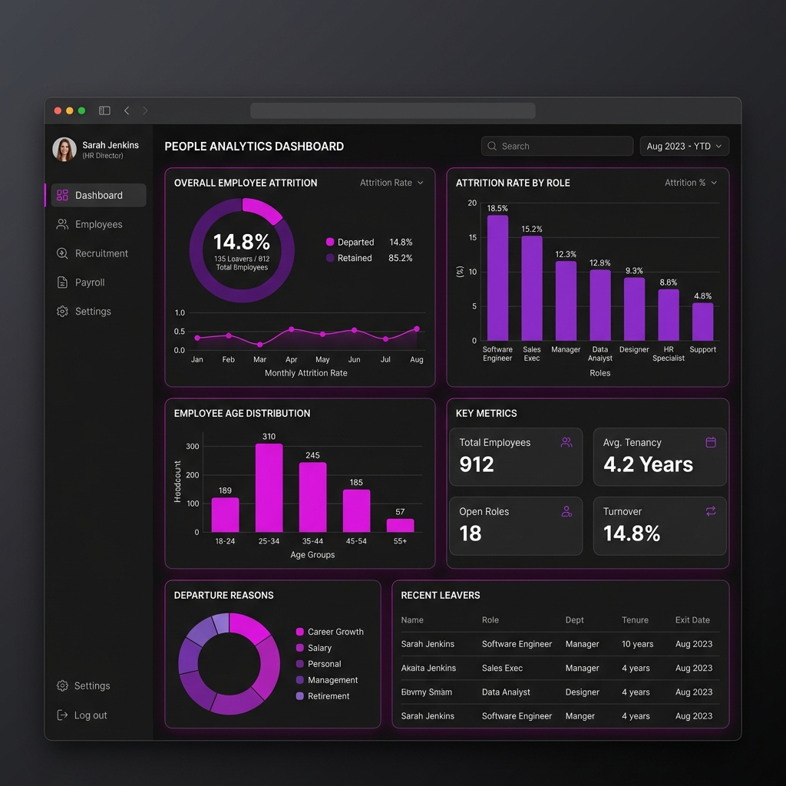

Hello, I'm
Adarsh Pandey
Data Analyst | ML Engineer | Data Science Enthusiast
"Passionate about turning complex data into clarity, and ideas into intelligent, scalable solutions."

About Me
I'm Adarsh Pandey, a Data Analytics and Machine Learning enthusiast focused on turning data into actionable insights and intelligent solutions. My journey began with a deep curiosity about how data influences decision-making and drives innovation.
Over time, I've developed hands-on experience with tools like Excel, SQL, Python, and Power BI. I enjoy working on real-world projects that involve uncovering patterns, building dashboards, and solving practical problems through data-driven approaches.
I'm constantly pushing my limits to evolve into a well-rounded data professional capable of solving complex problems with clarity and precision, while expanding my expertise into predictive models and ML.
Education
B.Tech — CSE (AI & ML Specialization)
Axis Institute of Technology and Management, Kanpur
Status: 3rd Year (Pursuing)My Skills
Technical Skills
Soft Skills
Currently Exploring
- Advanced Machine Learning
- Advanced Data Analytics
- Predictive Modeling & Automation
Services Offered
Data Analysis & Insights
Extract actionable insights by identifying trends and patterns that support data-driven decision-making.
Data Cleaning
Clean and transform raw datasets into structured, analysis-ready formats ensuring data reliability.
Dashboard Development
Design interactive and visually compelling Power BI/Excel dashboards to track KPIs effectively.
Machine Learning Models
Build and apply basic predictive models to forecast trends and automate decision making.
Selected Projects
Hover or tap cards to view detailed insights.

Vrinda Store Dashboard
An Excel dashboard analyzing sales data to uncover trends and customer behavior using Pivot Tables.
Vrinda Store Dashboard
Challenge: Working with raw datasets—data cleaning and creating derived columns to ensure accuracy.
- Sales Trends Analysis
- Top Products Identification

IPL Analysis (2008-2018)
Extracted insights about player performance, match outcomes, and winning patterns from IPL datasets.
IPL Analysis
Challenge: Determining meaningful KPIs. Built interactive dashboard with Power Query.
- Identified winning patterns
- Toss impact & venue outcomes

SQL Pizza Sales
Analyzed pizza sales with SQL to understand sales performance and demand.
SQL Pizza Sales
Challenge: First real-world SQL dataset, applied advanced JOINs, GROUP BY, and aggregates.
- Top-selling & highest-priced
- Avg orders & overall revenue

Store Sales Dashboard
A Power BI dashboard analyzing sales data through interactive visualizations.
Store Sales
Challenge: Transitioning from Excel logic to Power BI data visualization thinking.
- Sales trends & visual filters
- Total revenue & products

HR Analysis Dashboard
Analyzed employee data to identify factors affecting attrition and track workforce trends.
HR Analysis
Target: Understand attrition patterns across roles, salaries, and age groups.
- Identified critical attrition roles
- Dynamic HR insights filter
My Learning Journey
2024 — Finding My Path
Was initially confused about my profession, but then discovered the Data Science field. I explored it deeply and decided to transform my life and career into the data field.
2025 — Building the Foundation
Learned the core basics, essential tools, statistics, and the practical work involved in being a Data Analyst.
2026 — Practical Dashboards
Started actively making dashboards to practically apply my skills, engaging with various types of data and learning from different courses.
Future — Advanced ML Models
By the end of 2026 and the start of 2027, I will begin learning Machine Learning to develop good-level predictive ML models.
Fun Facts
- Opens laptop to do one task, ends up doing five different things.
- "Just 5 more minutes" of sleep is the biggest lie I've ever told.
- Enjoys music so much it becomes more important than the work itself.
- Explains things so much I feel like a part-time teacher.
- Tries to stay productive, but snacks have their own plans!